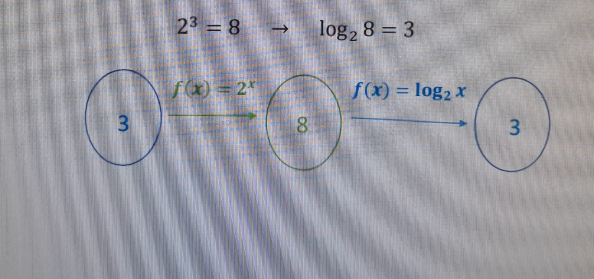

A função logarítmica é aquela que possui em sua lei de formação o logaritmo de uma variável, ou seja,
f(x)=logax. O domínio dessa função está no conjunto dos números reais positivos, sendo diferente de zero, e o
contradomínio, no conjunto dos números reais.
A função logarítmica é inversa a função exponencial.
Um exemplo é quando uma função exponencial de base 2 leva 3 a 8, uma
função logarítmica de base 2 leva 8 a 3.

Relação entre as Funções Logarítmicas e as Exponenciais:
Não
são todos os valores que a variável x pode assumir, para que isso seja possível, é preciso que
tais valores respeitem a condição de existência dos logaritmos. Assim, antes de simplesmente
ficarmos depositando números aleatórios na função torcendo para que um desses faça parte do
domínio dessa função, podemos resolver uma simples inequação. Isso será de grande ajuda para a
contrução do gráfico mais a frente.
Interseção com o Eixo Y: Raízes
Já foi possível perceber que nem toda função logarítmica intersecta o eixo
das ordenadas. Isso acontece devido às restrições do domínio. Se o domínio for
apenas de valores maiores a zero, significa que não cruzará o eixo y.
Nas quatro funções anteriores, vemos que apenas a função cinza p(x)
intercepta o eixo y, devido ao seu domínio ser D = {x > -2}.
Interseção com o Eixo x: Raízes
Sempre quando o gráfico de uma função fizer uma interseção com o eixo x, nós iremos
ter raízes
reais. E para encontrar essas raízes, devemos utilizar a equação f(x) = 0.